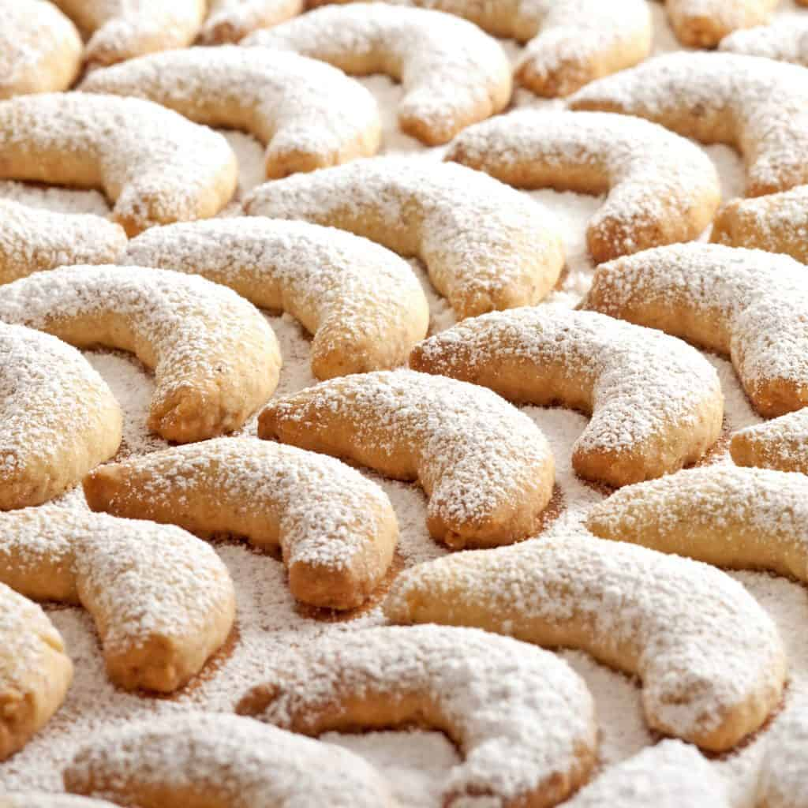

Vanillekipferl

Description
Popular throughout Austria, Germany, the Czech Republic, Poland, Slovakia and Hungary, these cookies are a popular favorite, especially at Christmastime, though enjoyed year-round and found in virtually every Viennese coffee house.
Ingedients
- 250 g all-purpose flour
- 227 g unsalted butter , softened at room temperature
- 2 large egg yolks (optional; it does make the otherwise dry/crumbly dough much easier to work with but the cookies won't have quite the same melt-in-your-mouth texture *see Note)
- 113.4 g (about 1 cup) ground walnuts, almonds or hazelnuts
- 1 package (1 1/2 teaspoons) vanilla sugar
- 90 g powdered sugar
- small pinch of salt
For dusting
- 60 g powdered sugar
- 1 packet (1 1/2 teaspoons) vanilla sugar
Steps
- Place all of the ingredients in a large bowl and knead until thoroughly combined. Unless you're using the egg yolks the dough will be pretty dry and flaky, like shortbread cookie dough. Shape the dough into a log and wrap with plastic wrap. Chill in the refrigerator for at least an hour.
- Preheat the oven to 350 degrees F.
- Cut off small pieces of the dough and shape them into crescents. Place the crescents onto a non-stick or parchment-lined cookie sheet. Bake on the middle rack for 12-15 minutes (depending on the size of the crescents) or until the edges begin to turn golden.
- Combine the powdered sugar and vanilla sugar. Let the cookies sit for one minute and then use a sifter to dust them with the vanilla-powdered sugar while they're still hot. Let the cookies cool completely and then give them a second dusting.
- Stored in an airtight container in a cool place, these cookies will keep for several weeks.
Source
Daring Gourmet